← 返回阅读库 · 原论文目录
论文讲解阅读文档 · 多模态语言模型 · v040
Ferret-v2: An Improved Baseline for Referring and Grounding with Large Language Models
视频时长 00:09:29；讲解文字 4,234 字符；提取讲解画面 28 张。按视频原顺序阅读，每段文字保留时间戳。
文字来自整段视频的自动语音转写，按自然停顿分段，并与 PPT / 论文页面 / 演示画面对齐。未将讲解压缩为摘要；术语、数字和口述公式请结合画面及原论文核对。 阅读稿已校正规范部分明确术语误识别；原始逐字稿和每处修改记录另行保留。
讲解画面为源视频截图（640×360），不是可编辑 PPT 文件。全片按每秒 2 帧扫描内容变化，逐步展开页保留；连续动画保留代表画面。清晰度受源视频限制。
下载完整资料包 · 含离线 HTML、PDF、Word、全部 PPT 画面和字幕。
原论文与材料
Ferret-v2: An Improved Baseline for Referring and Grounding with Large Language Models · 下载完整 PDF（14 页）
按时间阅读
00:00:00–00:00:18 · 画面 001
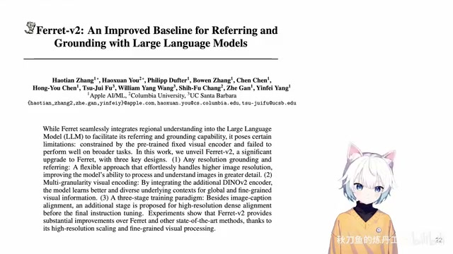
00:00:00–00:00:18 · 画面 001大家好 今天我们来快速说一篇论文 Ferret-v2 An Improved Baseline for Referring and Grounding with Large Language Models那这一篇呢就是我们之前介绍的这个 ferret 它的改进那它这个特点呢也是很明显的就是它可以做 referring and grounding 具体来说呢就是你可以在图里面找一个这个 bounding box 或者是一个点也好甚至是一个不规则的这样一个区域也好你问这个模型这个让模型回答你指的这一片区域的这个内容这个叫 referring
00:00:18–00:00:43 · 画面 002
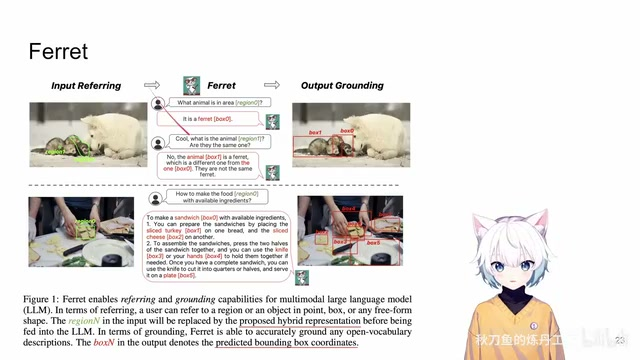
00:00:18–00:00:43 · 画面 002那同时呢这个模型也可以生成图像中的 bounding box 这个是 grounding 整个这一篇文章我们之前已经有一个视频给大家介绍过了那在这里呢我们快速回顾一下 Ferret 呢它用的是 LLaVA 的结构它的图像的部分呢用的是这个 clip encoder 但是呢当我们把图像直接加到我们的 language model 里的时候我们这里是有技巧的特别是当我们有各种 referring 的情况下
00:00:43–00:01:22 · 画面 003
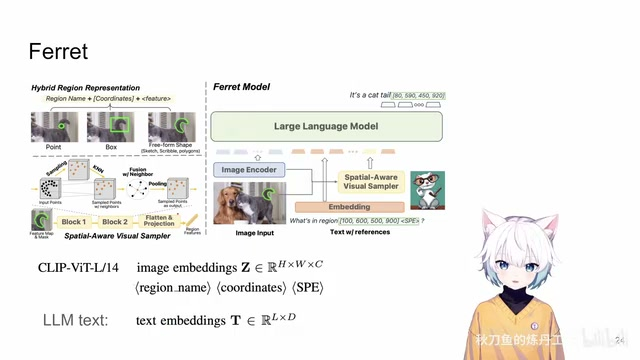
00:00:43–00:01:22 · 画面 003你看到这里它对于一个用户 referred 这么一个区域你在数据集中首先会尝试理解这个 referred 的这个区域它的内容是什么这是这个区域里面东西的名字然后是这个区域的坐标点就是一个点坐标 bounding box 就是两个点这种不规则的区域也是先有 bounding box 那么最后还有一个这个特别的 token 啊这里呢作者叫他这个 spatial-aware visual sampler 那这些 token 呢就是在你 clip feature 的基础上啊把我们的这一个区域内的这些特征经过点云的一些处理给它整合最后呢形成一系列的这个 token 啊加在最后那这些的操作呢在我们之前的这个视频中已经介绍过了那总之你知道这个系列当他在谈论这个图像中的某一个物体的时候啊他是用这样的一个形式来表达的
00:01:22–00:01:25 · 画面 004
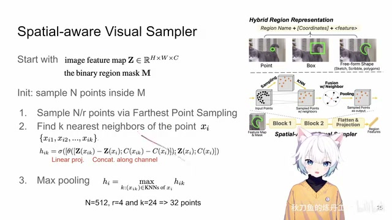
00:01:22–00:01:25 · 画面 00400:01:25–00:01:38 · 画面 005
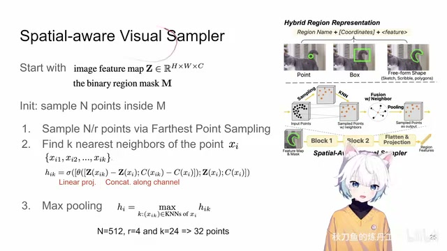
00:01:25–00:01:38 · 画面 00500:01:38–00:01:39 · 画面 006
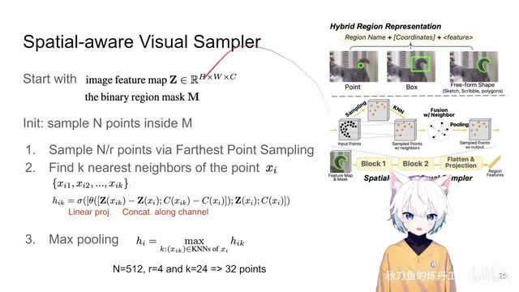
00:01:38–00:01:39 · 画面 00600:01:39–00:01:42 · 画面 007
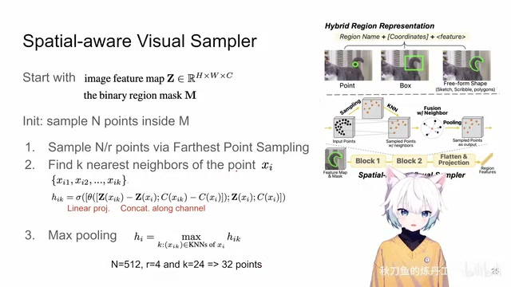
00:01:39–00:01:42 · 画面 00700:01:42–00:02:28 · 画面 008
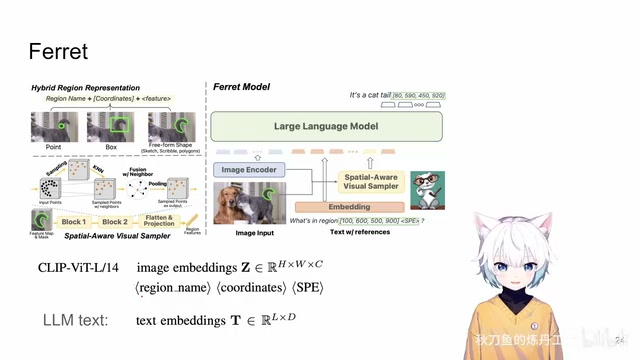
00:01:42–00:02:28 · 画面 008对吧相比于 LLaVA 来讲我们知道 Clip Encoder 这个东西现在已经 2024 年了它是一个比较松弛的一个状态它的性能不是那么好所以这篇文章里面不仅用这个 Coordinates 还用这个 SPE 来特别的弥补了这一部分那你对比于之前的 LLaVA 把这些东西拿掉它就可能会出现漏掉这个物体对这个图像中的物体识别不全的这么一个情况所以在当时最好的解决方法就是做一个额外的网络把这些东西重新给它捅到这个 embedding 里面去，那么当然你在回答的时候也是可以直接回答这个物体在图像中的坐标，这个呢就是 ferret，那么回到现在我们知道，那么到现在这个阶段我们想要让我们的模型能够做更细腻度的对图像的
00:02:28–00:02:29 · 画面 009
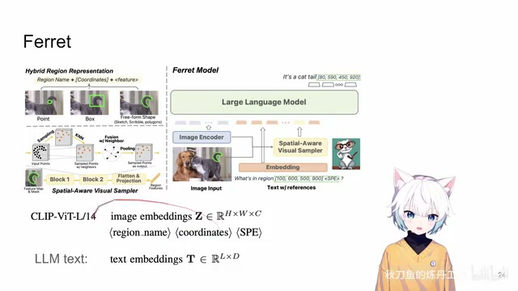
00:02:28–00:02:29 · 画面 00900:02:29–00:02:30 · 画面 010
00:02:29–00:02:30 · 画面 01000:02:30–00:04:05 · 画面 011
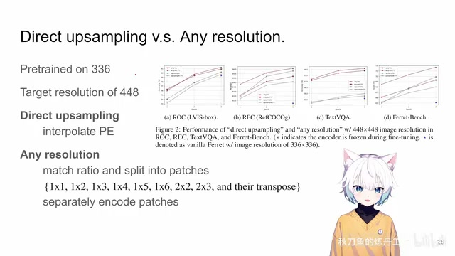
00:02:30–00:04:05 · 画面 011支持，我们希望我们的模型能够处理更加高清的图像，特别是你的这个物体在图像中本来它的占的面积就不大，你如果再用一个小低像素的这样一个图像去做的话，对于我们模型去识别来讲是非常困难的，但是怎么样让我们的现有的模型能够去适应更高分辨率的图像这里做点尝试的两种解决方案，一种就是我还是维持我的网络，但是因为现在你的图像变大了，你对于 VIT 来说它就有一个更长的序列去处理，这里就是把 positional encoding 给它重新插植到这种适合长序列的这样一个 positional encoding 去做这个是 direct up sampling
那么还有一种解法叫做 any resolution，就是你看到这里首先作者根据图像原始的横纵笔去尝试匹配这些预设的这些值匹配一下把它匹配到最相似的值，比如说这个图像分成一个二乘三的这样一个 patch 是比较合适，然后呢就真的把这个图像分成了相互独立的六个 patch，然后每个 patch 各自过这个 vision encoder，在这个实验里面就是 clip 了过完 vision encoder最后再根据它们的空间位置把所有的 token 给它串联起来就相当于我把这个图像切成块来分别过 encoder 做单独处理那么作者把这样的两种模式都放到我们这个 ferret 里面对于我们各种下游任务涉及到 language model 的各种下游任务它的性能的影响得到的结论就是我们还是应该把图像切成块做这个 any resolution
00:04:05–00:04:06 · 画面 012
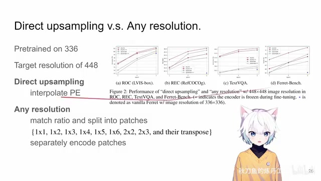
00:04:05–00:04:06 · 画面 01200:04:06–00:04:11 · 画面 013
00:04:06–00:04:11 · 画面 013那么这个是本文的第一个观察。那么作者基于此就开始了对 Forward 一个升级，也就是本文的 Version 2。它的升级主要包含两个方面，第一个就是 Multi-Granularity Visual Encoding，然后第二个就是因为我们现在有了新的模块，所以你训练的方法也要做一个升级。我们一个一个来看，首先第一个就是 Multi-Granularity。
00:04:11–00:04:12 · 画面 014
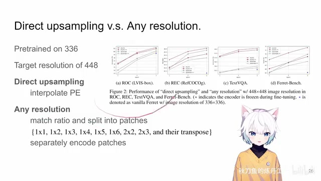
00:04:11–00:04:12 · 画面 01400:04:12–00:04:17 · 画面 015
00:04:12–00:04:17 · 画面 01500:04:17–00:04:32 · 画面 016
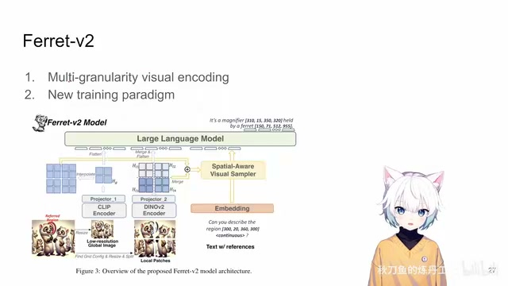
00:04:17–00:04:32 · 画面 01600:04:32–00:06:28 · 画面 017
00:04:32–00:06:28 · 画面 017那本质上就是我们知道 clip 它这个东西，你因为是做整张图片和文本做匹配这样训练出来的，所以呢它适合去捕捉一些图像全局的信息。但是你如果问它图像中具体的某一个东西，这个地方的 feature 是怎么样，它的性能可能就不是那么强了。当然虽然我们也介绍了很多工作去弥补这个方面，但是原装的 clip 对吧，它的这个性能大家都是知道的。
那么为了弥补这个部分作者就把这个 DINOv2 请出来了而且基于之前的第一个观察你去缩放一张图片不如你就直接处理原始的分辨率那么这样你看到新的这个 Ferret 它在处理一张图像的时候你拿到一张原始很大的图首先对于这个全局的 feature，你还是把它缩到这种原来的低分辨率，比如说 224 或者 336 这样的适合 clip 来处理的这样一个东西，然后过 clip encoder 过 projector，你得到一个 feature map，这是低像素的部分。
那高像素的部分呢，我们根据原始图像的它的这个横纵笔来去匹配我怎么样切它合适。比如说这个图呢，我就切成了二乘二的这样四个 patch，那每一个 patch 单独送到 dino v2 里面得到它自己的 feature。那么这个时候呢，作者再把它根据原来这四个 patch 它们相对空间位置的关系，再把这个 feature map 给它融合到一起，你就有了一个大的 feature map。
那么然后我们来看到作者对这个两个 feature map 它的处理，就是我去把这个 global information 给它差值放大到我们 local patch 它的 feature 它的一个大小。然后两个 feature 尺寸一样之后，我们直接给它相加，channel-wise addition，各自 channel 相加，最终得到一个融合过后的这样一个 feature。我们为什么要有这样一个 feature map，还记得我们之前说这个 ferret 它怎么处理我们用户输入的图像中的某个区域。
00:06:28–00:06:38 · 画面 018
00:06:28–00:06:38 · 画面 018它有一个 sampler根据我们的用户输入的 mask。然后根据我们图像 feature map。来去提取出有用的 feature。交给我们的 language model所以这里它组合出来的。
00:06:38–00:06:39 · 画面 019
00:06:38–00:06:39 · 画面 01900:06:39–00:07:23 · 画面 020
00:06:39–00:07:23 · 画面 020大的 feature map结合了 global information和 local information 的两个 feature map 加起来这个东西是送给 sampler 的。用它再去组装出一系列的 token。来描述图里面用户指定的区域的信息。那么当然跟之前的 ferret 一样。你提出来的 global 还有 local information我们也都是要直接送到 language model 里面的。
这个是跟用户指定无关。就是对图像的一个信息的描述。你这里你就是把没有差值。没有放大过的 global information还是跟原来一样一串 token 送到 language model 里面对于 local 是你先把它拼成原始图像的。这样的一个 feature然后再 flatten 送到 language model 里面操作的思路跟之前还是一样的。
00:07:23–00:07:24 · 画面 021
00:07:23–00:07:24 · 画面 02100:07:24–00:07:38 · 画面 022
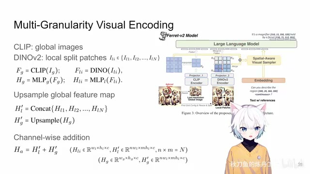
00:07:24–00:07:38 · 画面 022那么这个就是本文第二个核心的贡献。也是针对模型的第一个重大的升级。就是这个 multi granularity引入了一个 DINO我们做了一些调整。那么有了这样一个新模型。有了这样一个新的模块。作者对这个模型的训练方法。
00:07:38–00:07:46 · 画面 023
00:07:38–00:07:46 · 画面 023也要做相应的调整。那么原来我们知道这个模型是分两阶段训练的第一个阶段只训练这个 projector 然后第二个阶段啊把大家都训练一遍那么现在呢这里作者额外的加入了第三个阶段就是这个 high resolution dense alignment 啊用来训练这个 dino 他引入了这些 feature 那这里快速的过一下对吧第一个阶段跟 LLaVA 一样我们只用这个 image caption pair 然后呢用的是一些低像素的图像因为我们这里只有一个 global 啊
00:07:46–00:07:47 · 画面 024
00:07:46–00:07:47 · 画面 02400:07:47–00:08:44 · 画面 025
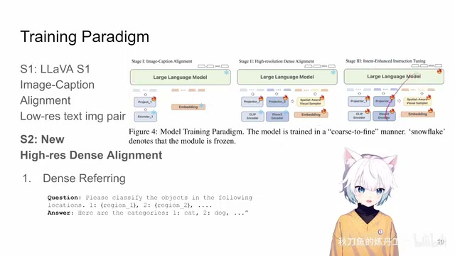
00:07:47–00:08:44 · 画面 025这个 clip encoder 我们无论你多高清的图进来都是要缩放成这个 clip 能处理的大小，那么这是这个阶段只训练这个 projector。那么第二个阶段新引入了这个阶段，我们就要开始关注一些更加 local 的信息来帮助我们去处理这个 dino 的这些它过来的这些 feature 还有这个 sampler。那么这个时候呢，你看到它训练的东西有这些，这个 embedding 就是 language model 里面的这个 text embedding。
那么用什么样的任务去训练这样的模型这里作者主要是关注两种任务第一个是 referring 就是你看到用户给出图像中的一些区域让模型去描述它这是第一种任务第二种任务就是 detection 它就是在锻炼模型 grounding 的能力对吧你看到你的 instruction 是这样让它去检测然后我们希望模型输出的结果是这个样子这是第二阶段至于第三阶段你就敞开来对吧所有的数据所有的你想往里面加的东西大家一起训练就好了那么这个就是在引入了新模块之后在训练方法上一个调整
00:08:44–00:09:07 · 画面 026
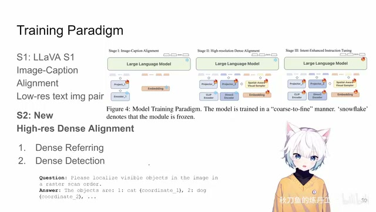
00:08:44–00:09:07 · 画面 026好的，那么以上就是本文主要的技术细节了。这是作者一开始的提供的一个图，你可以看到新的 Ferret 对于这种小的物体明显它的能力是变得更强了。那么具体的实验的部分，感兴趣的朋友非常推荐你到原文查看。好的，那么以上就是我对这篇文章的一个非常快速的整理。那么感谢您的收看，请多多指点。
00:09:07–00:09:28 · 画面 027
00:09:07–00:09:28 · 画面 02700:09:28–00:09:29 · 画面 028
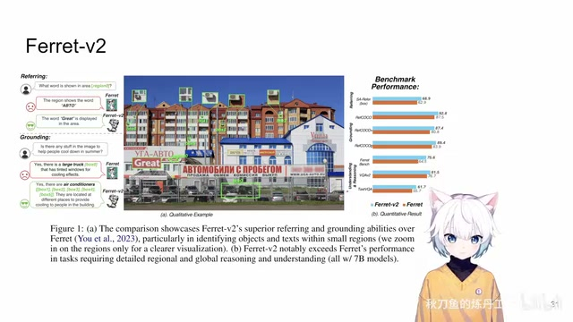
00:09:28–00:09:29 · 画面 028转写与来源说明 · 2 个自动复核提示
保留 59 个原始语音片段，2 个片段触发自动复核提示。提示仅用于定位可能的术语、重复或识别问题，不等于已确认错误。
讲解画面为源视频截图（640×360），不是可编辑 PPT 文件。全片按每秒 2 帧扫描内容变化，逐步展开页保留；连续动画保留代表画面。清晰度受源视频限制。
原视频：paper/合集_2026-10-16_多模态语言模型/[论文速览]Ferret-v2 An Improved...for Referring and Grounding with LLMs[2404.07973].mp4
SHA-256：03ce6ecab44f9a23f38bb5f8652cf5ddaec0d4ef55f6f3135caa1d676cb02dab
结合了 global information
这样的一个 feature
全文按视频语音与画面制作。原论文可从上方链接下载；完整资料包保留全文、原始逐字稿、字幕和校对记录。